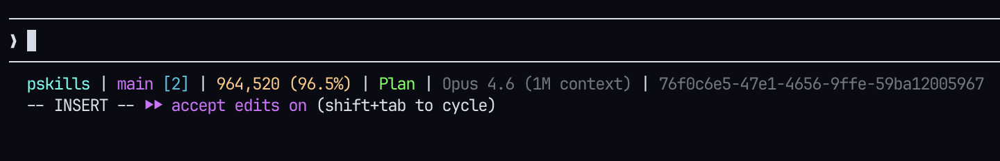
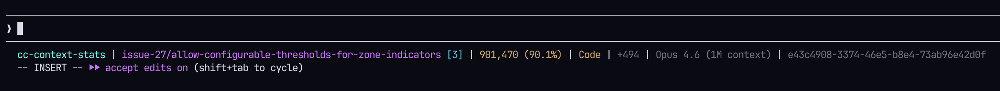
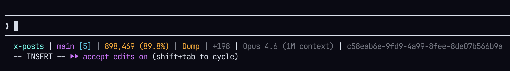
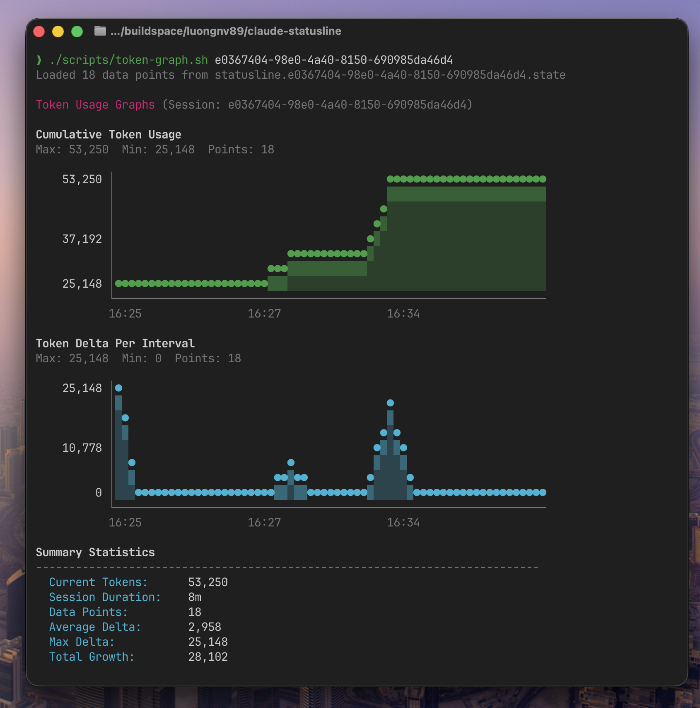

Real-time context monitoring for Claude Code. Track token usage, catch degradation early, and understand your AI spend — all without leaving your terminal.
By the time you notice output quality dropping, you've already wasted tokens — and money.
Each tool call, each file read quietly consumes context. You only find out when Claude starts looping or forgetting what it just wrote.
A single runaway session can burn thousands of tokens before you realize the model is operating at 20% intelligence. No warning, no way to see trends.
As context fills, Claude's effective intelligence drops along a measurable curve. Running at 30% context free isn't the same as running at 80% free.
After a session ends, you can't audit what happened — which interactions consumed the most tokens or why a particular task ballooned the context.
From real-time awareness to multi-week cost reports — context-stats gives you complete visibility without ever leaving your terminal.
Persistent status line in your Claude Code session — always on, zero friction.
context-stats graph)
Export a detailed Markdown report for any completed session.
Understand cost trends, model mix, and efficiency across all your projects.
Color-coded zones tell you exactly what to do — no guesswork required.




context-stats graphcontext-stats maps token usage to five zones so you always know what to do next.
No config files. No sign-up. No data leaving your machine.
One pip command, zero dependencies.
pip install context-stats
Add the status line to ~/.claude/settings.json.
{
"statusLine": {
"type": "command",
"command": "claude-statusline"
}
}
Your status line is live. Context zone, MI score, token delta — all visible.
claude # or open Claude Code
Run context-stats graph any time for the live ASCII dashboard.
context-stats graph
The MI score is a benchmark-calibrated metric that tracks effective model intelligence as context fills. Know when your session is costing more than it's producing.
At 50% context used, an Opus session is already operating at significantly reduced capability. MI surfaces this — so you can act before you waste tokens on degraded output.
Green (>0.70) — Yellow (0.40–0.70) — Red (<0.40)
No. All session data stays local in ~/.claude/statusline/. There are no network requests, no telemetry, no external API calls of any kind. Your token usage and session data never leave your machine.
No. The statusline script is a lightweight Python process that runs synchronously on each prompt. It reads from local CSV files and writes a single line to stdout. Typical execution is under 10ms. Git operations have a 5-second timeout to prevent hangs.
Yes. context-stats is pure Python 3.9+ with zero external dependencies and runs on macOS, Linux, and Windows. The statusline script and CLI both work across all platforms.
Python 3.9 or higher. No external packages are required — context-stats uses only the Python standard library.
Yes. Create ~/.claude/statusline.conf with key=value pairs. You can customize 18 named colors or use hex codes, toggle MI display, token detail, delta tracking, session ID, motion effects, and more. Full configuration reference in the docs.
context-stats reads the token data directly from Claude Code's status line JSON. It does not estimate — it reports the exact values that Claude Code provides. The MI score is calibrated against the MRCR v2 8-needle benchmark.
The statusline (claude-statusline) is the persistent one-line display shown by Claude Code at each prompt — it's always on. The graph dashboard (context-stats graph) is an on-demand ASCII chart view you run manually to see usage history, MI trends, cache activity, and delta per interaction over the session.
Free. MIT licensed. Zero external dependencies.
All your data stays local — always.